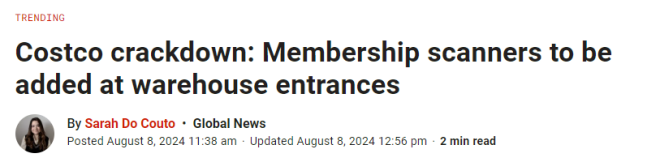
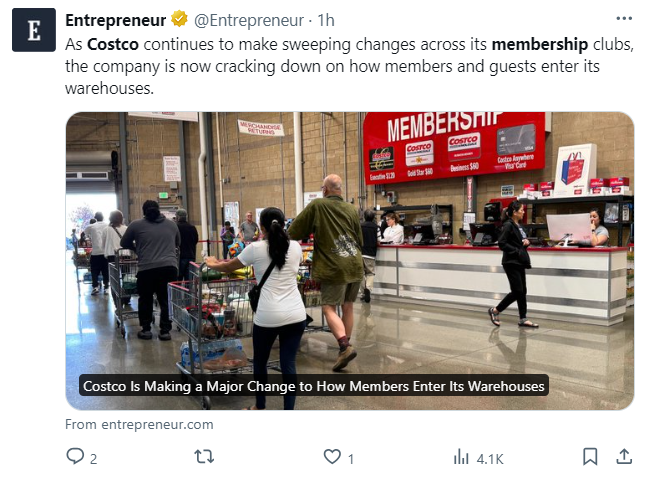
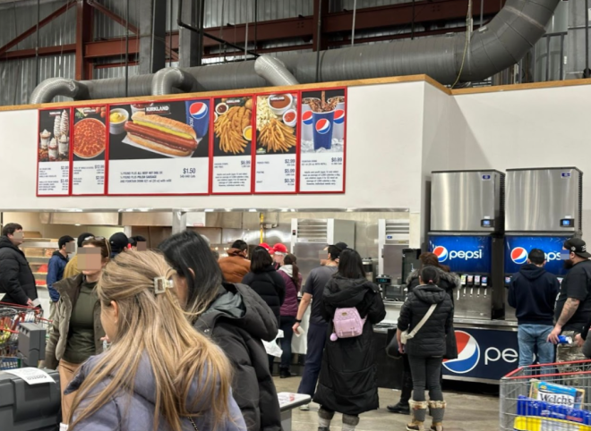
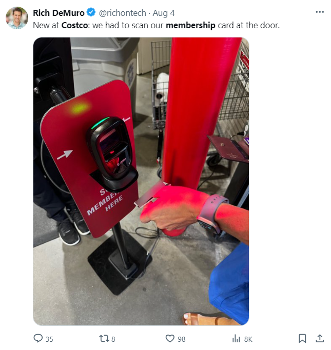
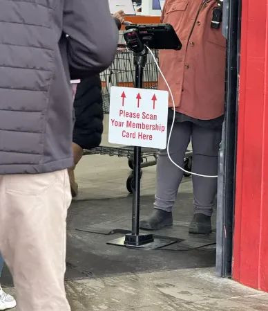
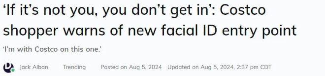
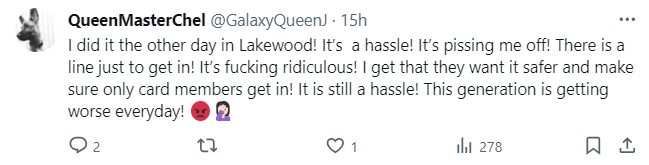
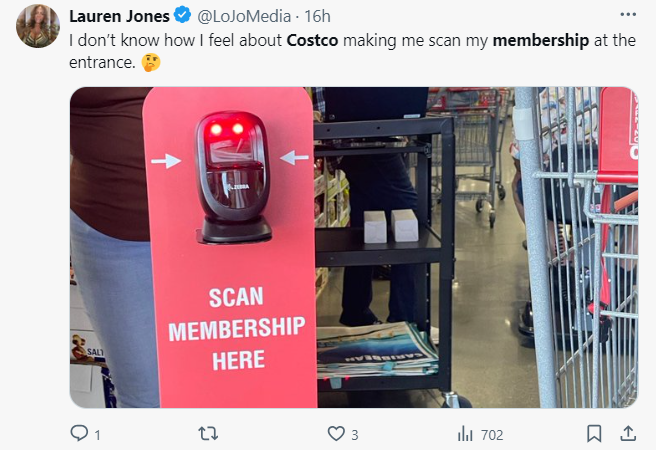
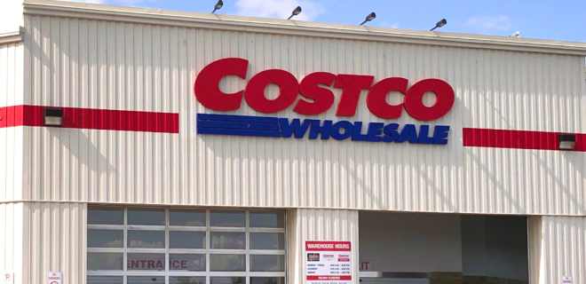

出狠招了！！！
大家注意了，借用朋友Costco会员卡的日子即将要结束了。
据美加多家英文媒体今日（8月8日）综合报道，为了实施更加严格的商店政策，Costco Wholesale宣布，将在其每家门店的入口处安装会员扫描仪。
这意味着Costco史上“最严苛”规定出炉了！

在进入Costco门店之前，顾客必须扫描其实体会员卡上的条形码，或电子Costco ID上的二维码。仅仅向门口店员出示会员卡已经不够了！
此外，Costco表示只接受顾客出示带照片的会员卡。有些会员卡上没有持卡人的照片，也会被店员拦下，并要求出示带照片的有效身份证件。现在，该公司的员工已接到了这一最新指示。

Costco表示，店员会“鼓励你去会员柜台拍照，以便将照片添加到会员卡上。”
声明中还写道：“如果你的会员资格无效、已过期或想注册新会员资格，工作人员会要求你在进入店内购物之前先到会员柜台。”

此外，进入Costco的顾客必须由持有有效会员卡的顾客陪同——值得注意的是，这个要求也适用于店里的美食广场，以及购买著名的$1.50刀热狗套餐。
Costco公司表示，这些扫描仪预计将在“接下来几个月内”实施。

Costco Wholesale Canada尚未回应Global News的评论请求，但很多加拿大网友已经在社交媒体上报告称，这些扫描仪已经进入到安省、BC省和阿尔伯塔省的部分门店。

Costco进店刷脸新规惹怒顾客：有人在门口被拒入店！
自从Costco推出进门”刷脸验人”的新政策以来，就一直饱受争议！
原因是，当顾客进门时必须向读卡器出示会员卡，然后顾客的照片就会出现在平板电脑的屏幕上，并由员工验证身份，以确保是本人。

近日，一段由TikToker@neiduuuh发布的“严厉批评Costco新政策”的视频在社交媒体上引起疯传，观看量高达1,670万次。
这段时长6秒的视频以Costco入口处的画面开始，显示门口安装了一个配有身份证扫描仪的”检查站”，告示牌子上用醒目的大字提醒顾客”在此扫描会员卡”（scan membership here），旁边还有一名员工盯着。

视频中的字幕详细说明了为什么发布者认为这项新的严格政策存在问题。她写道：”Costco的新入口系统。你要扫描你的会员卡，然后你的照片会显示在屏幕上，如果不是本人，连门都进不去，无论你有什么理由！他们才不管你是不是在帮你奶奶买东西。#可悲”
发布者在帖子的标题中写道，她对新的政策非常不满，因此决定再也不去Costco了。
Costco新规惹全网热议！
不少人在网上抱怨这条新规“太过于严苛”，甚至显得有些不近人情了！
一位女士说，“由于进门要刷脸验人，她无法为住院的母亲买东西。”
还有人说：“即使是会员本人也可能遇到难题，比如本人和照片可能存在差异，他们很难说服员工他们就是照片上的人，这不必要地耽误了他们的购物体验。”
网友们纷纷表示：
“前几天我遇到了，太麻烦了！真让人恼火！进去还要排长队，太荒谬了！我理解他们想更安全，确保只有持卡人才能进去！但真的很麻烦！”

“非常烦人且不方便，Costco应该寻找更好的方法。”
“现在去Costco比出入边境还麻烦，真是奇怪的时代！”
“我不知道该对Costco的会员扫描仪作何感想……”

“昨天进入Costco的时候我的卡被扫描了，我预计他们会在2-4个月内弃用它。有两名员工站在入口处，顾客们则在笨手笨脚地摆弄仪器……”
“我要停止在Costco购物了，每次停车和进店都是一件痛苦的事，他们会在进出门处检查你，逛店的时候还要躲避吃免费样品的人，而且价格很高、排队很长……”
另外一边，也有一些顾客支持新政策。
一些网友似乎并不太同情那些想用其他人的会员卡享受Costco优惠价格的人。
一条评论写道：“给你奶奶买点东西？哥们，自己去办张会员卡吧。”
另一条评论写道：”用户协议明确规定会员资格不可转让。会员规则上就写明必须是持卡人，一直都是这样。”
还有人表示，在这一问题上，他们实际上是站在Costco一边。”Costco之所以能在店内提供如此优惠的商品，是因为他们的大部分收入都来自会员费。如果把一张会员卡当邀请函一样发放，他们如何盈利？”
另一个人说：”在这一点上我和Costco站在同一阵线。我们当地的Costco商店总是人满为患，我几乎挤不进去，但现在这里的人少了，空间大了，也安静了。”
“我已经受够了那些（蹭卡）人！现在就连你妈妈的会员卡也救不了你了！”
“非会员终于不能免费品尝食物了！哈哈！”
“真是个好主意，我街对面的邻居经常偷偷溜进Costco，我还在想他是怎么做到的……”
“哈哈哈哈哈等不及要想所有进不去的人亮出我的卡了！”

Costco于今年1月份首次开始测试会员卡扫描仪。
Costco的财务主管理查德·加兰蒂（Richard Galanti）当时在接受采访时表示，在门口设置会员卡扫描仪将消除其在收银台和自助结账处扫描会员资格的需要。
“它加快了入口处的流程，也加快了结账时的流程，”Galanti说道。
他说，自2020年COVID-19大流行以来，越来越多的Costco顾客开始共享会员卡。
根据2023年年度报告，这家超市巨头去年从其1.28亿会员支付的会员费中获得了高达$46亿美元（$63亿加元）的收入。
上个月，加拿大Costco宣布会员费将上涨，Gold Star会员费将从每年$60加元涨到$65加元，高级会员Executive Membership将从每年$120加元涨到$130加元。
对于Costco严查会员卡这事，你怎么看？